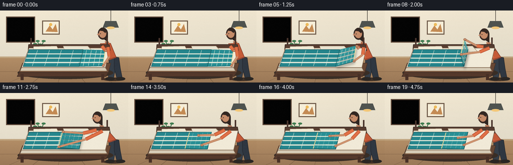
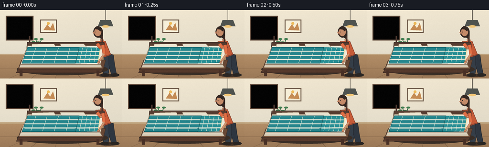
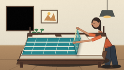
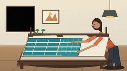
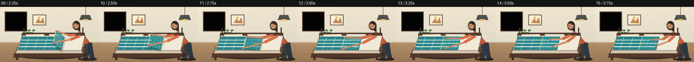

CODING AGENTS AS PIXEL WORLD MODELS
traex/GPT-5.6-Sol · motion_rationality_0051
点击播放 · 原生 RGB 像素
逐轮保存的候选
回放视频、检查图与代码变化。
每份候选均可单独播放。实际图片检查记录在下方工具轨迹中。
候选 01播放与检查图
点击播放 · 原生 RGB 像素


展开代码变化
--- 上一保存版本
+++ 本次保存版本
@@ -0,0 +1,234 @@
+from pathlib import Path
+import math
+import numpy as np
+from PIL import Image, ImageDraw, ImageFilter
+import artifact_io
+
+W, H, N = 256, 144, 20
+S = 4
+rng = np.random.default_rng(7)
+
+def ss(x): return int(round(x*S))
+def pts(seq): return [(ss(x), ss(y)) for x,y in seq]
+def lerp(a,b,t): return a+(b-a)*t
+def mixp(a,b,t): return (lerp(a[0],b[0],t), lerp(a[1],b[1],t))
+def smooth(t):
+ t=max(0,min(1,t)); return t*t*(3-2*t)
+
+def line(draw, xy, fill, width, joint='curve'):
+ draw.line(pts(xy), fill=fill, width=max(1,ss(width)), joint=joint)
+
+def ellipse(draw, box, fill, outline=None, width=1):
+ draw.ellipse(tuple(ss(v) for v in box), fill=fill, outline=outline, width=ss(width) if outline else 1)
+
+def rect(draw, box, fill, outline=None, width=1, radius=0):
+ b=tuple(ss(v) for v in box)
+ if radius:
+ draw.rounded_rectangle(b, radius=ss(radius), fill=fill, outline=outline, width=ss(width) if outline else 1)
+ else:
+ draw.rectangle(b, fill=fill, outline=outline, width=ss(width) if outline else 1)
+
+def poly(draw, xy, fill, outline=None, width=1):
+ draw.polygon(pts(xy), fill=fill)
+ if outline: draw.line(pts(list(xy)+[xy[0]]), fill=outline, width=ss(width), joint='curve')
+
+def bilerp(q,u,v):
+ top=mixp(q[0],q[1],u); bot=mixp(q[3],q[2],u)
+ return mixp(top,bot,v)
+
+def cloth_layer(im, q, base=(39,137,143,255), moving=False, pattern_alpha=90):
+ # patterned quadrilateral, with a softly lit center and warped woven grid
+ lay=Image.new('RGBA', im.size, (0,0,0,0)); d=ImageDraw.Draw(lay)
+ poly(d,q,base, outline=(21,87,93,255), width=1.0)
+ # broad subtle highlight bands
+ for k in range(1,4):
+ v=k/4
+ a=bilerp(q,0,v); b=bilerp(q,1,v)
+ line(d,[a,b],(116,203,198,38),2.0)
+ # woven grid follows the moving surface
+ for u in (0.16,0.38,0.60,0.82):
+ curve=[bilerp(q,u,v) for v in np.linspace(0.04,0.96,12)]
+ line(d,curve,(217,239,224,pattern_alpha),0.7)
+ for v in (0.25,0.52,0.79):
+ curve=[bilerp(q,u,v) for u in np.linspace(0.03,0.97,16)]
+ line(d,curve,(217,239,224,pattern_alpha),0.7)
+ # tiny stitch dashes along the gripped/free edge
+ edge=[bilerp(q,1,v) for v in np.linspace(.08,.92,9)]
+ for p in edge:
+ ellipse(d,(p[0]-0.65,p[1]-0.65,p[0]+0.65,p[1]+0.65),(231,221,163,210))
+ # raised moving fabric catches light on free edge
+ if moving:
+ line(d,[q[1],q[2]],(235,222,161,255),1.6)
+ line(d,[q[0],q[1]],(90,188,185,170),0.7)
+ im.alpha_composite(lay)
+
+def draw_room(im):
+ d=ImageDraw.Draw(im)
+ # softly graded plaster wall
+ for y in range(ss(0),ss(96)):
+ yy=y/S
+ t=yy/96
+ c=(int(239-13*t),int(229-10*t),int(207-6*t),255)
+ d.line([(0,y),(ss(W),y)],fill=c,width=1)
+ # chair rail and floor
+ rect(d,(0,92,256,95),(190,163,126,255))
+ for y in range(ss(95),ss(144)):
+ t=(y/S-95)/49
+ c=(int(176-22*t),int(139-19*t),int(100-13*t),255)
+ d.line([(0,y),(ss(W),y)],fill=c,width=1)
+ # floorboards in perspective
+ for x in (18,65,116,170,224): line(d,[(128,95),(x,144)],(123,94,67,65),0.7)
+ line(d,[(0,122),(256,122)],(123,94,67,55),0.6)
+ # framed window, left, with morning sky
+ rect(d,(14,14,68,62),(116,92,72,255),radius=1)
+ rect(d,(17,17,65,59),(164,209,220,255))
+ for yy in range(18,59):
+ c=(150+int(yy*.25),202+int(yy*.16),218,255)
+ d.line([(ss(18),ss(yy)),(ss(64),ss(yy))],fill=c,width=ss(1))
+ # clouds and distant roofs
+ ellipse(d,(24,25,42,31),(231,239,228,190)); ellipse(d,(37,23,54,30),(231,239,228,190))
+ poly(d,[(18,50),(30,40),(42,49),(54,38),(65,49),(65,59),(18,59)],(115,149,142,190))
+ rect(d,(39.5,17,42,59),(245,238,216,255)); rect(d,(17,36.5,65,39),(245,238,216,255))
+ rect(d,(12,12,70,64),(0,0,0,0),(92,70,55,255),2)
+ # wall art and pendant
+ rect(d,(84,20,119,48),(244,236,214,255),(106,86,69,255),2)
+ poly(d,[(91,42),(99,30),(105,38),(111,27),(115,43)],(194,137,82,255))
+ ellipse(d,(98,25,104,31),(235,184,87,255))
+ line(d,[(221,0),(221,21)],(65,59,52,255),1)
+ poly(d,[(210,21),(232,21),(237,34),(205,34)],(79,83,79,255))
+ ellipse(d,(213,32,229,37),(242,198,119,80))
+ # small plant tucked into corner
+ rect(d,(73,77,86,94),(141,83,53,255),radius=2)
+ for end in [(70,67),(75,61),(80,68),(87,61),(90,70)]:
+ line(d,[(80,80),end],(53,105,71,255),1.4)
+ ellipse(d,(end[0]-4,end[1]-2,end[0]+4,end[1]+2),(62,122,77,255))
+
+def draw_person_back(im, frame, p):
+ d=ImageDraw.Draw(im)
+ # lean increases as blanket travels, then eases slightly during patting
+ if frame <= 12: lean=0.25+0.75*p
+ else: lean=1-0.15*smooth((frame-12)/7)
+ hip=(226,96); sh=(214-15*lean,65+4*lean)
+ # soft ground shadow
+ ellipse(d,(205,134,248,141),(67,50,38,70))
+ # legs, behind bed edge
+ poly(d,[(217,91),(228,92),(230,117),(226,137),(216,137),(218,115)],(53,62,72,255),(39,43,49,255),1)
+ poly(d,[(228,92),(237,94),(240,116),(244,136),(234,138),(228,116)],(47,55,65,255),(37,41,47,255),1)
+ ellipse(d,(210,133,229,140),(42,38,35,255)); ellipse(d,(231,133,250,140),(42,38,35,255))
+ # hair silhouette first
+ hc=(sh[0]-5, sh[1]-19)
+ ellipse(d,(hc[0]-10,hc[1]-13,hc[0]+10,hc[1]+11),(54,42,36,255))
+ poly(d,[(hc[0]+4,hc[1]-8),(hc[0]+10,hc[1]-1),(hc[0]+10,hc[1]+16),(hc[0]+3,hc[1]+11)],(49,38,33,255))
+ # neck and torso
+ poly(d,[(sh[0]-1,sh[1]-5),(sh[0]+7,sh[1]-4),(sh[0]+8,sh[1]+4),(sh[0],sh[1]+4)],(184,124,93,255))
+ poly(d,[(sh[0]-10,sh[1]),(sh[0]+10,sh[1]-1),(232,94),(218,99),(204,86)],(197,91,56,255),(128,61,43,255),1)
+ # shirt highlight/seams
+ line(d,[(sh[0]-6,sh[1]+2),(218,94)],(223,115,70,180),1.2)
+ line(d,[(218,97),(231,93)],(119,58,45,190),1)
+ # face in profile, looking toward blanket
+ ellipse(d,(hc[0]-8,hc[1]-10,hc[0]+7,hc[1]+8),(196,139,105,255),(109,73,58,255),0.6)
+ poly(d,[(hc[0]-8,hc[1]-2),(hc[0]-12,hc[1]+1),(hc[0]-8,hc[1]+3)],(192,130,99,255))
+ # hair cap over forehead
+ poly(d,[(hc[0]-8,hc[1]-7),(hc[0]-3,hc[1]-13),(hc[0]+7,hc[1]-7),(hc[0]+5,hc[1]-2),(hc[0],hc[1]-6)],(51,39,34,255))
+ ellipse(d,(hc[0]-5.5,hc[1]-1.5,hc[0]-4,hc[1]),(42,36,34,255))
+ line(d,[(hc[0]-9,hc[1]+5),(hc[0]-5,hc[1]+6)],(109,65,55,255),0.65)
+ return sh
+
+def draw_bed(im):
+ d=ImageDraw.Draw(im)
+ # bed shadow and wooden frame
+ ellipse(d,(35,112,226,137),(57,46,38,75))
+ poly(d,[(45,105),(221,105),(216,124),(38,124)],(104,72,53,255),(69,48,38,255),1)
+ poly(d,[(38,124),(216,124),(211,132),(34,132)],(85,57,43,255),(62,44,35,255),1)
+ rect(d,(41,127,47,139),(72,48,38,255)); rect(d,(202,127,208,139),(72,48,38,255))
+ # headboard at far side
+ poly(d,[(57,68),(218,68),(220,80),(56,80)],(86,60,48,255),(60,44,37,255),1.2)
+ line(d,[(62,69),(62,55)],(72,51,43,255),3); line(d,[(214,69),(214,54)],(72,51,43,255),3)
+ # mattress and white fitted sheet
+ poly(d,[(58,75),(219,75),(210,114),(43,114)],(241,234,216,255),(138,116,91,255),1)
+ poly(d,[(43,114),(210,114),(214,121),(40,121)],(213,202,181,255),(132,107,84,255),1)
+ # pillows at far edge
+ poly(d,[(67,72),(113,71),(119,83),(65,85)],(238,231,210,255),(168,149,123,255),0.7)
+ poly(d,[(126,71),(175,71),(185,82),(130,84)],(233,226,207,255),(168,149,123,255),0.7)
+ line(d,[(72,80),(111,78)],(207,194,170,180),0.7)
+
+def hand_positions(frame,p, q):
+ if frame <= 12:
+ # fingers stay at the two corners of the lifted free edge
+ return (q[1][0]+1,q[1][1]+1), (q[2][0]+1,q[2][1]-1)
+ # release and square/pat the freshly folded stack
+ t=smooth((frame-12)/3) if frame<16 else 1
+ a=mixp((q[1][0]+1,q[1][1]+1),(146,86),t)
+ b=mixp((q[2][0]+1,q[2][1]-1),(158,102),t)
+ if frame>=16:
+ bounce = -3.2 if frame in (16,18) else 0.5
+ a=(146,89+bounce); b=(158,104-bounce*0.55)
+ return a,b
+
+def draw_arms(im, sh, hands):
+ d=ImageDraw.Draw(im)
+ shoulders=[(sh[0]-7,sh[1]+5),(sh[0]+5,sh[1]+7)]
+ for idx,(shoulder,hand) in enumerate(zip(shoulders,hands)):
+ # elbow bows naturally outward/downward; near arm drawn last
+ el=(lerp(shoulder[0],hand[0],.46)+(4 if idx==0 else 7),
+ lerp(shoulder[1],hand[1],.46)+(5 if idx==0 else 2))
+ line(d,[shoulder,el],(190,84,54,255),7.0)
+ line(d,[shoulder,el],(225,113,70,255),4.8)
+ line(d,[el,hand],(179,119,88,255),4.3)
+ line(d,[el,hand],(207,149,112,255),2.8)
+ ellipse(d,(hand[0]-2.7,hand[1]-2.3,hand[0]+3.0,hand[1]+2.5),(204,145,108,255),(116,76,61,255),0.5)
+ # short fingers curl over edge
+ line(d,[(hand[0]-1,hand[1]+1),(hand[0]+2.5,hand[1]+2.5)],(135,87,67,220),0.65)
+
+def render(frame):
+ im=Image.new('RGBA',(W*S,H*S),(0,0,0,255))
+ draw_room(im)
+ if frame < 3: p=0.0
+ else: p=smooth((frame-3)/9)
+ sh=draw_person_back(im,frame,p)
+ draw_bed(im)
+ # left portion stays on mattress; right portion is folded across its hinge
+ left=[(58,78),(166,78),(158,112),(46,112)]
+ cloth_layer(im,left,base=(36,132,139,255),moving=False,pattern_alpha=82)
+ edge_back=(lerp(210,122,p), 79-23*math.sin(math.pi*p))
+ edge_front=(lerp(205,113,p), 111-23*math.sin(math.pi*p))
+ q=[(166,78),edge_back,edge_front,(158,112)]
+ # soft moving shadow makes the airborne fold legible
+ if 0<p<1:
+ shadow=Image.new('RGBA',im.size,(0,0,0,0)); sd=ImageDraw.Draw(shadow)
+ lift=math.sin(math.pi*p)
+ sq=[(x+2,y+3+4*lift) for x,y in q]
+ poly(sd,sq,(36,43,39,int(60+40*lift)))
+ shadow=shadow.filter(ImageFilter.GaussianBlur(ss(2.2)))
+ im.alpha_composite(shadow)
+ # top surface gets slightly brighter while catching light in the air
+ lift=math.sin(math.pi*p)
+ base=(int(39+19*lift),int(142+16*lift),int(148+14*lift),255)
+ cloth_layer(im,q,base=base,moving=True,pattern_alpha=105)
+ # folded thickness and seam after landing
+ if frame>=12:
+ d=ImageDraw.Draw(im)
+ line(d,[q[1],q[2]],(223,210,151,255),1.6)
+ line(d,[(124,112),(158,112)],(21,88,92,210),1.1)
+ hands=hand_positions(frame,p,q)
+ draw_arms(im,sh,hands)
+ # foreground bed-edge highlight (selectively in front)
+ d=ImageDraw.Draw(im)
+ line(d,[(42,121),(211,121)],(173,139,103,140),0.7)
+ # warm light veil and deterministic film texture
+ rgb=np.asarray(im.convert('RGB').resize((W,H),Image.Resampling.LANCZOS),dtype=np.int16)
+ yy,xx=np.mgrid[0:H,0:W]
+ glow=np.exp(-((xx-34)**2+(yy-28)**2)/(2*68**2))*4.0
+ rgb=np.clip(rgb+glow[...,None],0,255)
+ noise=rng.normal(0,0.65,rgb.shape[:2])[...,None]
+ rgb=np.clip(rgb+noise,0,255).astype(np.uint8)
+ return rgb
+
+def main():
+ global rng
+ rng=np.random.default_rng(7)
+ frames=np.stack([render(i) for i in range(N)])
+ artifact_io.save(frames,Path(__file__).resolve().parent)
+
+if __name__=='__main__':
+ main()
可观测工具轨迹
实际执行的命令与返回图片。
命令 1exit 0
/bin/bash -lc "cat prompt.txt && printf '\\n--- GENERATION_RULES.md ---\\n' && cat GENERATION_RULES.md"
命令 2exit 0
/bin/bash -lc "cat task_spec.json && printf '\\n--- files ---\\n' && find . -maxdepth 2 -type f -printf '%p\\n' | sort"
命令 3exit 0
/bin/bash -lc "sed -n '1,240p' artifact_io.py"
命令 4exit 0
/bin/bash -lc "cat > generate.py <<'PY'
from pathlib import Path
import math
import numpy as np
from PIL import Image, ImageDraw, ImageFilter
import artifact_io
W, H, N = 256, 144, 20
S = 4
rng = np.random.default_rng(7)
def ss(x): return int(round(x*S))
def pts(seq): return [(ss(x), ss(y)) for x,y in seq]
def lerp(a,b,t): return a+(b-a)*t
def mixp(a,b,t): return (lerp(a[0],b[0],t), lerp(a[1],b[1],t))
def smooth(t):
t=max(0,min(1,t)); return t*t*(3-2*t)
def line(draw, xy, fill, width, joint='curve'):
draw.line(pts(xy), fill=fill, width=max(1,ss(width)), joint=joint)
def ellipse(draw, box, fill, outline=None, width=1):
draw.ellipse(tuple(ss(v) for v in box), fill=fill, outline=outline, width=ss(width) if outline else 1)
def rect(draw, box, fill, outline=None, width=1, radius=0):
b=tuple(ss(v) for v in box)
if radius:
draw.rounded_rectangle(b, radius=ss(radius), fill=fill, outline=outline, width=ss(width) if outline else 1)
else:
draw.rectangle(b, fill=fill, outline=outline, width=ss(width) if outline else 1)
def poly(draw, xy, fill, outline=None, width=1):
draw.polygon(pts(xy), fill=fill)
if outline: draw.line(pts(list(xy)+[xy[0]]), fill=outline, width=ss(width), joint='curve')
def bilerp(q,u,v):
top=mixp(q[0],q[1],u); bot=mixp(q[3],q[2],u)
return mixp(top,bot,v)
def cloth_layer(im, q, base=(39,137,143,255), moving=False, pattern_alpha=90):
# patterned quadrilateral, with a softly lit center and warped woven grid
lay=Image.new('RGBA', im.size, (0,0,0,0)); d=ImageDraw.Draw(lay)
poly(d,q,base, outline=(21,87,93,255), width=1.0)
# broad subtle highlight bands
for k in range(1,4):
v=k/4
a=bilerp(q,0,v); b=bilerp(q,1,v)
line(d,[a,b],(116,203,198,38),2.0)
# woven grid follows the moving surface
for u in (0.16,0.38,0.60,0.82):
curve=[bilerp(q,u,v) for v in np.linspace(0.04,0.96,12)]
line(d,curve,(217,239,224,pattern_alpha),0.7)
for v in (0.25,0.52,0.79):
curve=[bilerp(q,u,v) for u in np.linspace(0.03,0.97,16)]
line(d,curve,(217,239,224,pattern_alpha),0.7)
# tiny stitch dashes along the gripped/free edge
edge=[bilerp(q,1,v) for v in np.linspace(.08,.92,9)]
for p in edge:
ellipse(d,(p[0]-0.65,p[1]-0.65,p[0]+0.65,p[1]+0.65),(231,221,163,210))
# raised moving fabric catches light on free edge
if moving:
line(d,[q[1],q[2]],(235,222,161,255),1.6)
line(d,[q[0],q[1]],(90,188,185,170),0.7)
im.alpha_composite(lay)
def draw_room(im):
d=ImageDraw.Draw(im)
# softly graded plaster wall
for y in range(ss(0),ss(96)):
yy=y/S
t=yy/96
c=(int(239-13*t),int(229-10*t),int(207-6*t),255)
d.line([(0,y),(ss(W),y)],fill=c,width=1)
# chair rail and floor
rect(d,(0,92,256,95),(190,163,126,255))
for y in range(ss(95),ss(144)):
t=(y/S-95)/49
c=(int(176-22*t),int(139-19*t),int(100-13*t),255)
d.line([(0,y),(ss(W),y)],fill=c,width=1)
# floorboards in perspective
for x in (18,65,116,170,224): line(d,[(128,95),(x,144)],(123,94,67,65),0.7)
line(d,[(0,122),(256,122)],(123,94,67,55),0.6)
# framed window, left, with morning sky
rect(d,(14,14,68,62),(116,92,72,255),radius=1)
rect(d,(17,17,65,59),(164,209,220,255))
for yy in range(18,59):
c=(150+int(yy*.25),202+int(yy*.16),218,255)
d.line([(ss(18),ss(yy)),(ss(64),ss(yy))],fill=c,width=ss(1))
# clouds and distant roofs
ellipse(d,(24,25,42,31),(231,239,228,190)); ellipse(d,(37,23,54,30),(231,239,228,190))
poly(d,[(18,50),(30,40),(42,49),(54,38),(65,49),(65,59),(18,59)],(115,149,142,190))
rect(d,(39.5,17,42,59),(245,238,216,255)); rect(d,(17,36.5,65,39),(245,238,216,255))
rect(d,(12,12,70,64),(0,0,0,0),(92,70,55,255),2)
# wall art and pendant
rect(d,(84,20,119,48),(244,236,214,255),(106,86,69,255),2)
poly(d,[(91,42),(99,30),(105,38),(111,27),(115,43)],(194,137,82,255))
ellipse(d,(98,25,104,31),(235,184,87,255))
line(d,[(221,0),(221,21)],(65,59,52,255),1)
poly(d,[(210,21),(232,21),(237,34),(205,34)],(79,83,79,255))
ellipse(d,(213,32,229,37),(242,198,119,80))
# small plant tucked into corner
rect(d,(73,77,86,94),(141,83,53,255),radius=2)
for end in [(70,67),(75,61),(80,68),(87,61),(90,70)]:
line(d,[(80,80),end],(53,105,71,255),1.4)
ellipse(d,(end[0]-4,end[1]-2,end[0]+4,end[1]+2),(62,122,77,255))
def draw_person_back(im, frame, p):
d=ImageDraw.Draw(im)
# lean increases as blanket travels, then eases slightly during patting
if frame <= 12: lean=0.25+0.75*p
else: lean=1-0.15*smooth((frame-12)/7)
hip=(226,96); sh=(214-15*lean,65+4*lean)
# soft ground shadow
ellipse(d,(205,134,248,141),(67,50,38,70))
# legs, behind bed edge
poly(d,[(217,91),(228,92),(230,117),(226,137),(216,137),(218,115)],(53,62,72,255),(39,43,49,255),1)
poly(d,[(228,92),(237,94),(240,116),(244,136),(234,138),(228,116)],(47,55,65,255),(37,41,47,255),1)
ellipse(d,(210,133,229,140),(42,38,35,255)); ellipse(d,(231,133,250,140),(42,38,35,255))
# hair silhouette first
hc=(sh[0]-5, sh[1]-19)
ellipse(d,(hc[0]-10,hc[1]-13,hc[0]+10,hc[1]+11),(54,42,36,255))
poly(d,[(hc[0]+4,hc[1]-8),(hc[0]+10,hc[1]-1),(hc[0]+10,hc[1]+16),(hc[0]+3,hc[1]+11)],(49,38,33,255))
# neck and torso
poly(d,[(sh[0]-1,sh[1]-5),(sh[0]+7,sh[1]-4),(sh[0]+8,sh[1]+4),(sh[0],sh[1]+4)],(184,124,93,255))
poly(d,[(sh[0]-10,sh[1]),(sh[0]+10,sh[1]-1),(232,94),(218,99),(204,86)],(197,91,56,255),(128,61,43,255),1)
# shirt highlight/seams
line(d,[(sh[0]-6,sh[1]+2),(218,94)],(223,115,70,180),1.2)
line(d,[(218,97),(231,93)],(119,58,45,190),1)
# face in profile, looking toward blanket
ellipse(d,(hc[0]-8,hc[1]-10,hc[0]+7,hc[1]+8),(196,139,105,255),(109,73,58,255),0.6)
poly(d,[(hc[0]-8,hc[1]-2),(hc[0]-12,hc[1]+1),(hc[0]-8,hc[1]+3)],(192,130,99,255))
# hair cap over forehead
poly(d,[(hc[0]-8,hc[1]-7),(hc[0]-3,hc[1]-13),(hc[0]+7,hc[1]-7),(hc[0]+5,hc[1]-2),(hc[0],hc[1]-6)],(51,39,34,255))
ellipse(d,(hc[0]-5.5,hc[1]-1.5,hc[0]-4,hc[1]),(42,36,34,255))
line(d,[(hc[0]-9,hc[1]+5),(hc[0]-5,hc[1]+6)],(109,65,55,255),0.65)
return sh
def draw_bed(im):
d=ImageDraw.Draw(im)
# bed shadow and wooden frame
ellipse(d,(35,112,226,137),(57,46,38,75))
poly(d,[(45,105),(221,105),(216,124),(38,124)],(104,72,53,255),(69,48,38,255),1)
poly(d,[(38,124),(216,124),(211,132),(34,132)],(85,57,43,255),(62,44,35,255),1)
rect(d,(41,127,47,139),(72,48,38,255)); rect(d,(202,127,208,139),(72,48,38,255))
# headboard at far side
poly(d,[(57,68),(218,68),(220,80),(56,80)],(86,60,48,255),(60,44,37,255),1.2)
line(d,[(62,69),(62,55)],(72,51,43,255),3); line(d,[(214,69),(214,54)],(72,51,43,255),3)
# mattress and white fitted sheet
poly(d,[(58,75),(219,75),(210,114),(43,114)],(241,234,216,255),(138,116,91,255),1)
poly(d,[(43,114),(210,114),(214,121),(40,121)],(213,202,181,255),(132,107,84,255),1)
# pillows at far edge
poly(d,[(67,72),(113,71),(119,83),(65,85)],(238,231,210,255),(168,149,123,255),0.7)
poly(d,[(126,71),(175,71),(185,82),(130,84)],(233,226,207,255),(168,149,123,255),0.7)
line(d,[(72,80),(111,78)],(207,194,170,180),0.7)
def hand_positions(frame,p, q):
if frame <= 12:
# fingers stay at the two corners of the lifted free edge
return (q[1][0]+1,q[1][1]+1), (q[2][0]+1,q[2][1]-1)
# release and square/pat the freshly folded stack
t=smooth((frame-12)/3) if frame<16 else 1
a=mixp((q[1][0]+1,q[1][1]+1),(146,86),t)
b=mixp((q[2][0]+1,q[2][1]-1),(158,102),t)
if frame>=16:
bounce = -3.2 if frame in (16,18) else 0.5
a=(146,89+bounce); b=(158,104-bounce*0.55)
return a,b
def draw_arms(im, sh, hands):
d=ImageDraw.Draw(im)
shoulders=[(sh[0]-7,sh[1]+5),(sh[0]+5,sh[1]+7)]
for idx,(shoulder,hand) in enumerate(zip(shoulders,hands)):
# elbow bows naturally outward/downward; near arm drawn last
el=(lerp(shoulder[0],hand[0],.46)+(4 if idx==0 else 7),
lerp(shoulder[1],hand[1],.46)+(5 if idx==0 else 2))
line(d,[shoulder,el],(190,84,54,255),7.0)
line(d,[shoulder,el],(225,113,70,255),4.8)
line(d,[el,hand],(179,119,88,255),4.3)
line(d,[el,hand],(207,149,112,255),2.8)
ellipse(d,(hand[0]-2.7,hand[1]-2.3,hand[0]+3.0,hand[1]+2.5),(204,145,108,255),(116,76,61,255),0.5)
# short fingers curl over edge
line(d,[(hand[0]-1,hand[1]+1),(hand[0]+2.5,hand[1]+2.5)],(135,87,67,220),0.65)
def render(frame):
im=Image.new('RGBA',(W*S,H*S),(0,0,0,255))
draw_room(im)
if frame < 3: p=0.0
else: p=smooth((frame-3)/9)
sh=draw_person_back(im,frame,p)
draw_bed(im)
# left portion stays on mattress; right portion is folded across its hinge
left=[(58,78),(166,78),(158,112),(46,112)]
cloth_layer(im,left,base=(36,132,139,255),moving=False,pattern_alpha=82)
edge_back=(lerp(210,122,p), 79-23*math.sin(math.pi*p))
edge_front=(lerp(205,113,p), 111-23*math.sin(math.pi*p))
q=[(166,78),edge_back,edge_front,(158,112)]
# soft moving shadow makes the airborne fold legible
if 0<p<1:
shadow=Image.new('RGBA',im.size,(0,0,0,0)); sd=ImageDraw.Draw(shadow)
lift=math.sin(math.pi*p)
sq=[(x+2,y+3+4*lift) for x,y in q]
poly(sd,sq,(36,43,39,int(60+40*lift)))
shadow=shadow.filter(ImageFilter.GaussianBlur(ss(2.2)))
im.alpha_composite(shadow)
# top surface gets slightly brighter while catching light in the air
lift=math.sin(math.pi*p)
base=(int(39+19*lift),int(142+16*lift),int(148+14*lift),255)
cloth_layer(im,q,base=base,moving=True,pattern_alpha=105)
# folded thickness and seam after landing
if frame>=12:
d=ImageDraw.Draw(im)
line(d,[q[1],q[2]],(223,210,151,255),1.6)
line(d,[(124,112),(158,112)],(21,88,92,210),1.1)
hands=hand_positions(frame,p,q)
draw_arms(im,sh,hands)
# foreground bed-edge highlight (selectively in front)
d=ImageDraw.Draw(im)
line(d,[(42,121),(211,121)],(173,139,103,140),0.7)
# warm light veil and deterministic film texture
rgb=np.asarray(im.convert('RGB').resize((W,H),Image.Resampling.LANCZOS),dtype=np.int16)
yy,xx=np.mgrid[0:H,0:W]
glow=np.exp(-((xx-34)**2+(yy-28)**2)/(2*68**2))*4.0
rgb=np.clip(rgb+glow[...,None],0,255)
noise=rng.normal(0,0.65,rgb.shape[:2])[...,None]
rgb=np.clip(rgb+noise,0,255).astype(np.uint8)
return rgb
def main():
global rng
rng=np.random.default_rng(7)
frames=np.stack([render(i) for i in range(N)])
artifact_io.save(frames,Path(__file__).resolve().parent)
if __name__=='__main__':
main()
PY
python generate.py
python - <<'PY'
import numpy as np
z=np.load('pixels.npz')['pixels']
print('pixels',z.shape,z.dtype,'frames',len(list(__import__('pathlib').Path('frames').glob('*.png'))))
PY"命令 5exit 0
/bin/bash -lc "python - <<'PY'
from PIL import Image,ImageDraw
ids=range(9,16)
w,h=256,144
out=Image.new('RGB',(w*len(ids),(h+18)),(20,20,20)); d=ImageDraw.Draw(out)
for j,i in enumerate(ids):
im=Image.open(f'frames/{i:02d}.png'); out.paste(im,(j*w,18));d.text((j*w+3,2),f'{i:02d} / {i/4:.2f}s',fill='white')
out.save('.tmp/contact.png')
import numpy as np
ims=[np.array(Image.open(f'frames/{i:02d}.png')).astype(float) for i in range(20)]
print('mean abs frame deltas:', [round(np.abs(ims[i]-ims[i-1]).mean(),2) for i in range(1,20)])
PY
python -m py_compile generate.py
ls -lh pixels.npz index.html inspection.png frames/00.png frames/19.png"视觉工具实际返回图片 1

视觉工具实际返回图片 2

视觉工具实际返回图片 3

视觉工具实际返回图片 4

保存候选 1 份；完成命令 5 次；可验证图片返回 4 张。原始 API 响应与完整日志保留在本地。